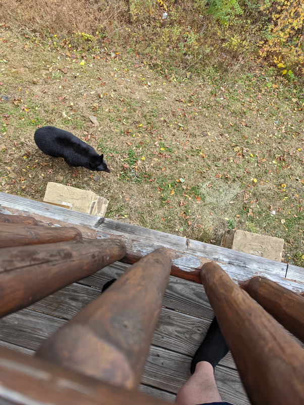
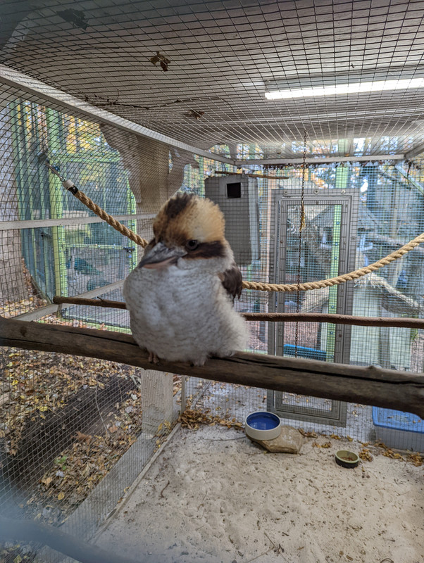
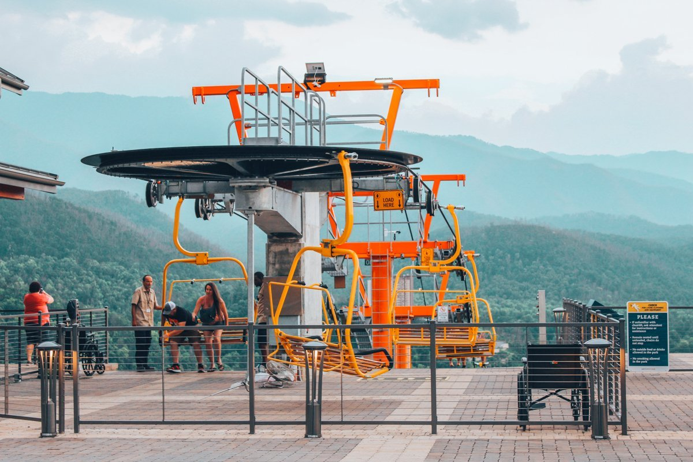

Eight hours is what we expected the drive to be, but it took us 10 hours instead. We got to drive through Nashville and as a Colts fan I made sure to boo the Titans while driving past thier stadium. We lost a lot of time from the drive because of a wreck that took us an hour to go a couple miles. The gps also took us down very narrow roads in the mountains while it was dark making that part of the trip some white knuckle driving. Unfornatnly for us when wew finally got to our cabin we were unable to see anything outside since it was dark. Since we were all tired from traveling all day we decieded to go to bed for the night.
The First Day
We woke up early and made sure to check the view first thing in the morning. I wish the picture could do justice but its just hard to caputre it. We just made sure to soak it in as much as we could
That day we went to the aquarium in Gatlinburg. It was huge and took us a while to get through it. I highly recommended it for anyone that goes.
Once we got back the cabin we all decided to relax. I went out to the porch just to look at the scenery and then I heard some rustling leaves below me. Looked down and there was a bear right below me.

The Second Day
We started our next day by deciding to go into the Smokey Mountains and enjoy the park. We were up really early and decided to drive out to Clingmans Dome. Its an observation deck that is built 6000 ft up on the tallest summit in the park.
The Drive through the park was just beutiful. All the leaves colors were changing and just the views you could see were amazing. We only saw some turkeys for wildlife in the park on our drive. After driving about an hour we reached the trail for Clingmans Dome and then had a half mile hike to the top that was really steep. Reaching the top was worth it as you were on top of a mountain and could see all around you.
After the hiking and the driving around we decided to take it easy the rest of the day. Spent time playing games and making food the rest of the day.
The Third Day
So to start the morning we had a few things we wanted to do so we headed out early. While the car was still foggy we realized we had a visitor try to get into the car.
After that shock we headed to a place called Parrot Mountains and Gardens. They have tons of exoctic birds, macaws, toucans, and my personal favorite the Kookaburra. They had a place you could hold the birds and feed them. One expiernce you feed some small birds nectar and they fly and perch all over you and end up with several birds on you.

We headed next to The Gatlinburg Skylift. If I handled heights better I think I would say it was a great expiernce but I still enjoyed it. It was about 5-10 minutes to reach the top of the mountain. There was a bridge to walk across that spanned the top of two mountains and had glass panels in the middle of it to look down, which didn't bother me like I thought it would. Then there was a trail back to where we came up and then we took the lift back down the mountain. Then we ended the day by getting some Baskin Robbins and headed back to the cabin.

My favorite things I did while I was there
1. Sitting around enjoying the view
As a man who enjoys doing nothing, the only way to make doing nothing better is having something amazing to look at while you do it.
2. Going through The Smokey Mountains National Park
I don't know how many times I said "look at that" every turn you make its just something new that is just wonderful to look at. Take your time going through it and take several pictures.
3. The Aquarium
I really expected this to be a let down but the expierence was worth it. You get to walk through tunnels under the water and see so much. They have all kinds sea creatures to see. My favorite there had to be the Mantis Shrimp.